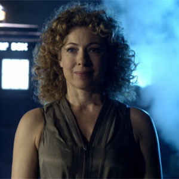

| Rose Tyler |
| Martha Jones |
| Jack Harkness |
| Lady Christina de Souza |
| Rory Williams |
| Amy Pond |
| Clara Oswald |
| River Song |
The Companions
River Song
River Song is a fictional character created by Steven Moffat and played by Alex Kingston in the British science-fictionseries Doctor Who.
River Song was introduced to the series as an experienced future companion of series protagonist the Doctor, an alien Time Lord who travels through time in his TARDIS. Because River Song is a time traveller herself, her adventures with the Doctor occur out of synchronisation; their first meeting (from the audience's perspective) is his first and apparently her last. In later appearances, River is a companion of the Doctor in his eleventh incarnation, portrayed by Matt Smith. River Song was created by Doctor Who writer Steven Moffat for the show's fourth series in 2008, under the tenure of executive producer Russell T Davies.
When the character was first introduced, much about her origins remained a mystery. Following the character's initial appearance, Davies had described her as "one of the most important characters" in the narrative, and "vital" to the Doctor's life.[3] In series six (2011), Moffat's episodes unveil more about the character. Born Melody Pond, River is the daughter of the Eleventh Doctor's companions Amy Pond (Karen Gillan) and Rory Williams (Arthur Darvill), alongside whom Kingston had appeared several times in series five (2010). Having been conceived on board the TARDIS as it travelled through the space-time vortex, Melody is born with genetic traits and abilities similar to the Doctor's own race, the Time Lords.